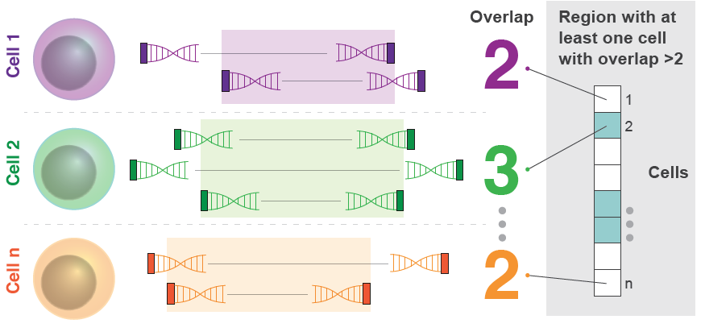
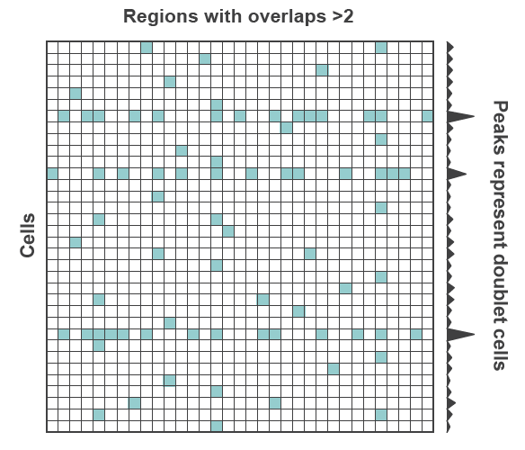

AMULET
AMULET: ATAC-seq MULtiplet Estimation Tool
A count based method for detecting doublets from single nucleus ATAC-seq (snATAC-seq) data.
Publication: https://doi.org/10.1186/s13059-021-02469-x
Source Code: https://github.com/UcarLab/AMULET
Note: The jar files can be found in the releases: https://github.com/UcarLab/AMULET/releases
Vignettes

License
AMULET is provided under the GPLv3 license.
System Requirements
Python 3 with the following libraries: - numpy - pandas - scipy - statsmodels
pip3 install numpy pandas scipy statsmodels
If using BAM files: Java SE 8 (build 231) or higher.
Installation
If the system requirements are satisfied:
- Download the latest release.
- Unzip the files to your preferred output directory.
- Enable the shell script to be executed using
chmod(e.g.,chmod +x AMULET.sh)
The shell file can be run from there. Java is portable and the jar should not need to be recompiled for most platforms.
Running AMULET
Running AMULET consists of two parts:
1) Identifying all loci with >2 uniquely aligning reads for each cell.

2) detecting doublets cells that have more loci with >2 reads than expected.

The bash shell script combines both of these steps, but they can be run independently as well. The latter (doublet detection) may be useful for running doublet detection using q-values different from the default.
Bash shell script
To run using the bash shell script, provide the following arguments: 1. Path to the bam file (e.g., possorted.bam from CellRanger) 2. Path to a barcode to cell_id map in CSV format (e.g., singlecell.csv from CellRanger) 3. Path to the list of chromosomes to use for the analysis (e.g., human_chromosomes_noxy.txt) 4. Path to known repetitive elements. (e.g., blacklist_repeats_segdups_rmsk_hg19.bed depending on genome) 5. Path to an existing output directory to write output files. 6. Path of this script’s directory.
Fragment file example:
AMULET.sh /path/to/fragments.tsv.gz /path/to/singlecell.csv /path/to/human_autosomes.txt /path/to/repeatfilter.bed /path/to/output/ /path/to/shellscript/
BAM file example:
AMULET.sh /path/to/possorted.bam /path/to/singlecell.csv /path/to/human_autosomes.txt /path/to/repeatfilter.bed /path/to/output/ /path/to/shellscript/
Note: If you know the input bam file is coordinate sorted and you get an error message saying it’s not, please use the --forcesorted option. There is a problem with the SAMReader library not recognizing this flag correctly in the header.
Example:
AMULET.sh --forcesorted /path/to/possorted.bam /path/to/singlecell.csv /path/to/human_autosomes.txt /path/to/repeatfilter.bed /path/to/output/ /path/to/shellscript/
Advanced: Optional Arguments
The above can be used for common CellRanger outputs. Use the following options to adjust for differences in CellRanger outputs or for different inputs in general:
--expectedoverlap Expected number of reads overlapping. (Default: 2)
--maxinsertsize The maximum insert size (in bp) between read pairs. (Default: 900)
--startbases The amount of bases add to the start position. (BAM Default: 4, Frag Default: 0)
--endbases The amount of bases to add to the end position. (BAM Default: -5, Frag Default: 0)
BAM Input Only:
--bambc The bam file attribute to use to extract the barcode from reads (Default: “CB”)
--forcesorted Forces the input bam file to be treated as sorted.
--bcidx The column index (counting from 0) of the CSV file barcode to cell id map for the barcode. (Default: 0)
--cellidx The column index (counting from 0) of the CSV file barcode to cell id map for the cell id. (Default: 0)
--iscellidx The column index (counting from 0) of the CSV file barcode to cell id map for determining if the barcode corresponds to a cell. (Default: 9)
--mapqthresh Threshold for filtering low map quality reads (<= comparison). (Default: 30)
--maxinsertsize The maximum insert size (in bp) between read pairs. (Default: 900)
Examples:
AMULET.sh --bambc CB --bcidx 1 /path/to/possorted.bam /path/to/singlecell.csv /path/to/human_autosomes.txt /path/to/repeatfilter.bed /path/to/output/ /path/to/shellscript/
AMULET.sh --bcidx 1 --cellidx 2 --iscellidx 3 /path/to/possorted.bam /path/to/singlecell.csv /path/to/human_autosomes.txt /path/to/repeatfilter.bed /path/to/output/ /path/to/shellscript/
Running overlap counter and doublet detection independently
Fragment File Overlap Counter (Detect overlaps from .tsv/.txt/.tsv.gz/.txt.gz using Python)
To run the fragment overlap counter, use python3 FragmentFileOverlapCounter.py and provide the following input arguments:
FRAGMENTFILE Path to the fragment file (e.g., fragments.tsv.gz from CellRanger)
BCMAP Path to a barcode to cell_id map in CSV format (e.g., singlecell.csv from CellRanger)
CHRLIST Path to the list of chromosomes to use for the analysis (e.g., human_autosomes.txt)
OUTDIR Path to an existing output directory to write output files.
Example:
python3 FragmentFileOverlapCounter.py BAMFILE BCMAP CHRLIST OUTDIR
Optional Arguments:
--expectedoverlap Expected number of reads overlapping. (Default: 2)
--maxinsertsize The maximum insert size (in bp) between read pairs. (Default: 900)
--startbases The amount of bases add to the start position. (Default: 0)
--endbases The amount of bases to add to the end position (can be negative). (Default: 0)
BAM Overlap Counter (Detect overlaps from BAM using Java)
To run the overlap counter jar file, use java -jar snATACOverlapCounter.jar and provide the following input arguments:
BAMFILE Path to the bam file (e.g., possorted.bam from CellRanger)
BCMAP Path to a barcode to cell_id map in CSV format (e.g., singlecell.csv from CellRanger)
CHRLIST Path to the list of chromosomes to use for the analysis (e.g., human_autosomes.txt)
OUTDIR Path to an existing output directory to write output files.
Example:
java -jar snATACOverlapCounter.jar BAMFILE BCMAP CHRLIST OUTDIR
Optional Arguments:
--expectedoverlap Expected number of reads overlapping. (Default: 2)
--bambc The bam file attribute to use to extract the barcode from reads (Default: “CB”)
--forcesorted Forces the input bam file to be treated as sorted.
--bcidx The column index (counting from 0) of the CSV file barcode to cell id map for the barcode. (Default: 0)
--cellidx The column index (counting from 0) of the CSV file barcode to cell id map for the cell id. (Default: 8)
--iscellidx The column index (counting from 0) of the CSV file barcode to cell id map for determining if the barcode corresponds to a cell. (Default: 9)
--mapqthresh Threshold for filtering low map quality reads (<= comparison). (Default: 30)
--maxinsertsize The maximum insert size (in bp) between read pairs. (Default: 900)
--startbases The amount of bases add to the start position. (Default: 4)
--endbases The amount of bases to add to the end position (can be negative). (Default: -5)
Examples:
java -jar snATACOverlapCounter.jar --bambc CB BAMFILE BCMAP CHRLIST OUTDIR
java -jar snATACOverlapCounter.jar --bambc CB --cellidx 1 BAMFILE BCMAP CHRLIST OUTDIR
Multiplet Detection (Python)
The doublet detection python file requires 3 input arguments.
OVERLAPS Path to the Overlaps.txt output from overlap counter.
OVERLAPSUMMARY Path to the OverlapSummary.txt output from overlap counter.
OUTDIR Path to an existing output directory to write output files.
Optional Arguments:
--rfilter A bed file of known repetitive regions to exclude from doublet detection.
--q The q-value threshold for detecting doublets.
--qrep The q-value threshold for inferring repetitive regions to exclude from doublet detection.
Example:
python3 AMULET.py --rfilter /path/to/repeats.bed OVERLAPS OVERLAPSUMMARY OUTDIR
Interpreting Results
Overlap Counter
The overlap counter script produces four output files describing the run and the data: Overlaps.txt, OverlapSummary.txt, StatSummary.txt, and RunTime.txt
Overlaps.txt
A tab delimited file with the following columns:
- chr - Chromosome of the genomic region with an overlap >2.
- start - The start position of the overlap >2.
- end - The end position of the overlap >2.
- Cell Id - The cell id (e.g., _cell_0, _cell_1, etc. from CellRanger).
- Min Overlap Count - The minimum number of reads overlapping within this region.
- Max Overlap Count - The maximum number of reads overlapping within this region.
- Mean Mapping Quality - The average mapping quality for all reads within this region.
- Max Mapping Quality - The max mapping quality for all reads within this region.
- Starts - The start positions of each read within this region for this cell id.
- Ends - The end positions of each read within this region for this cell id.
OverlapSummary.txt
A tab delimited file with the following columns:
- Cell Id - The cell id (e.g., _cell_0, _cell_1, etc. from CellRanger).
- Number of Valid Read Pairs - The total number of valid read pairs for the cell (i.e., all forward strand reads with mates).
- Number of Overlaps - The total number of overlaps observed in this cell (before merging).
- Barcode - The read barcode associated with the cell id.
- Total Number of Reads - The total number of reads (forward and reverse strange reads counted independently).
StatSummary.txt
A file containing the following information:
- Total Reads - The total number of reads in the bam file.
- Duplicate Reads - The total number of reads flagged as a duplicate.
- Low Mapping Quality Reads - The total number of reads with mapping quality <= 30.
- Valid Read Pairs - The total number of read pairs that pass the following:
- ReadPairedFlag = True
- ReadUnmappedFlag = False
- MateUnmappedFlag = False
- SecondaryorSupplementary = False
- DuplicateReadFlag = False
- ReferencerIndex != MateReferenceIndex (i.e., read pairs map to the same chromosome)
- Insert size is positive and < 900bp (~6 nucleosomes)
- Mapping quality > 30
- The read’s chromosome is in the chromosome list provided.
- Mean Read Length - The average length of forward strand reads.
- Mean Insert Size - The average length of end to end insert sizes.
RunTime.txt
Shows the runtime (in seconds) for identifying all instances of read overlaps >2.
Multiplet Detection
The multiplet detection python script produces three output files: MultipletProbabilities, MultipletCellIds_xx.txt, and MultipletBarcodes_xx.txt (xx corresponding to the q-value threshold used to call multiplets).
MultipletProbabilities.txt
A tab delimited file with the following columns:
- cell_id - The cell id (e.g., _cell_0, _cell_1, etc. from CellRanger)
- barcode - The cell barcode.
- p-value - The Poisson probability obtained from the cumulative distribution function.
- q-value - The FDR corrected p-value for multiple hypothesis testing.
MultipletCellIds_xx.txt
Files with the MultipletCellIds prefix correspond to multiplet cell ids with a q-value threshold specified by xx (i.e., 0.xx). For example 01 implies a q-value threshold of 0.01.
MultipletBarcodes_xx.txt
Files with the MultipletBarcodes prefix correspond to multiplet cell barcodes with a q-value threshold specified by xx (i.e., 0.xx). For example 01 implies a q-value threshold of 0.01.